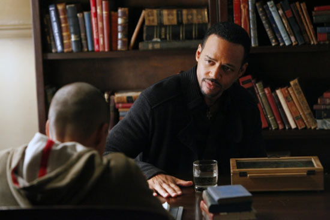

Episode 15 - THE DINNER PARTY

STEFAN TALKS ABOUT HIS DARK DAYS TO ELENA - Stefan tells to
Elena stories avout his dark period and the surprising person
whose her influence changes every thing. After he gets the truth
from Luka, Jonas (Randy Goodwin) reveals his fellings for Bonnie
and Jeremy. Damon is trying to catch Elijah off guard, and because
of this he does a party in the dinner to him, Jenna, Alaric and
Andie (Dawn Olivieri), but the news of last minute tunrs the
Damon's plan a disaster.
Go to GUIDE SECOND SEASON